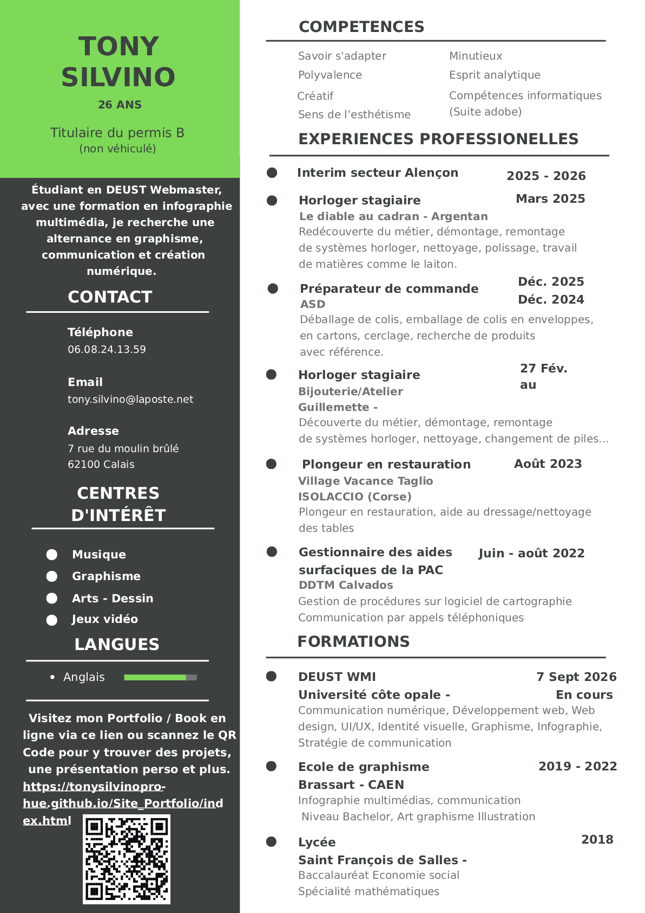

Mon CV
Actuellement étudiant en DEUST Webmaster et Métiers de l’Internet à l’Université du Littoral Côte d’Opale, je recherche une entreprise pouvant m’accueillir en alternance dans les domaines de la communication, du graphisme et de la création de contenus numériques.
J’ai auparavant suivi pendant trois ans une formation d’Infographiste Multimédia, qui m’a permis de développer de solides bases en conception graphique et en communication visuelle, notamment à travers l’utilisation de Photoshop, Illustrator et InDesign.
Aujourd’hui, je souhaite compléter cette expérience par une approche davantage orientée vers le numérique et le web. Je suis particulièrement intéressé par la création de visuels et de supports de communication, la mise en page, la gestion de contenus et la communication numérique, tout en restant ouvert à d’autres missions.
